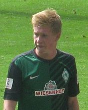
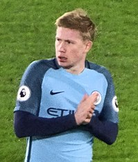

Senior Career
| Years | Club Name | Apps | Gls |
|---|---|---|---|
| 2008–2012 | Genk | 97 | 16 |
| 2012–2014 | Chelsea | 3 | 0 |
| 2012–2013 | Werder Bremen (loan) | 33 | 10 |
| 2014–2015 | VfL Wolfsburg | 51 | 13 |
| 2015– | Manchester City | 165 | 38 |
Chelsea
On 31 January 2012, on the winter transfer deadline day, Premier League club Chelsea and Genk announced the permanent signing of De Bruyne, with the fee rumoured to be in the region of £7 million. He signed a five-and-a-half-year contract at Stamford Bridge, but would stay at Genk for the remainder of the 2011–12 season. De Bruyne told the club website, "To come to a team like Chelsea is a dream but now I have to work hard to achieve the level that's necessary." On 18 July 2012, De Bruyne made his debut for Chelsea in a friendly match against Major League Soccer (MLS) side Seattle Sounders FC in a 4–2 win. De Bruyne also played the first half against Ligue 1 giants Paris Saint-Germain at Yankee Stadium, New York.
Werder Bremen (loan)

On 31 July 2012, Chelsea announced that De Bruyne was to join Werder Bremen in the Bundesliga on a season-long loan deal. He scored his first goal for Bremen in a 3–2 defeat to Hannover 96 on 15 September, netting from 11 yards out after being played in by Eljero Elia. He continued his good form, scoring in Bremen's next game, a 2–2 draw with VfB Stuttgart, on 23 September. De Bruyne got back on the score sheet on 18 November, scoring the winning goal — despite his team being down to 10 men — as Bremen came from a goal down to defeat Fortuna Düsseldorf 2–1.
De Bruyne scored his first goal in over two months on 4 May 2013, since netting a consolation goal in Bayern Munich's 6–1 hammering of Bremen, putting his side up 2–0 at home to TSG 1899 Hoffenheim before a late brace from Sven Schipplock meant that the game finished 2–2. He followed this up with a goal in Bremen's next match, securing a place in the Bundesliga for the next season with a 1–1 draw against Eintracht Frankfurt on 11 May.
Return to Chelsea
After a successful loan spell in the Bundesliga with Werder Bremen, De Bruyne was linked with a move to stay in Germany with either Borussia Dortmund or Bayer Leverkusen. Incoming manager José Mourinho, however, assured De Bruyne he was a part of Chelsea's plan for the future, and the player officially returned to Chelsea on 1 July 2013.
De Bruyne injured a knee while scoring his first goal for Chelsea, in a pre-season friendly game against a Malaysia XI, but was fit to make his competitive debut on the opening day of the 2013–14 Premier League season against Hull City, and made an assist for the first goal in a 2–0 win.
Wolfsburg
2013–14 season
On 18 January 2014, Wolfsburg signed De Bruyne for a fee of £18 million (€22 million). On 25 January 2014, he made his debut for Wolfsburg in a 3–1 home loss against Hannover 96. On 12 April 2014, De Bruyne assisted 2 goals in their 4–1 home win against 1. FC Nürnberg. After a week he scored his first goal for Wolfsburg in 3–1 away win against Hamburger SV. He also scored in the last two matches of the Bundesliga helping his team to win against VfB Stuttgart and Borussia Mönchengladbach.
2014–15 season
De Bruyne scored his first goal of the 2014–15 season on 2 October 2014, volleying in a clearance from outside the box to salvage a 1–1 draw against Lille in the Europa League. In the third group match away to Krasnodar on 23 October, De Bruyne scored twice as Wolfsburg secured their first win in the competition with a 4–2 victory. On 30 January 2015, he scored another brace in a 4–1 home win against Bayern Munich, their first Bundesliga defeat since April 2014. On 1 March 2015, De Bruyne assisted three goals in a 5–3 win over his former club Werder Bremen.
On 12 March 2015, De Bruyne scored two goals in a 3–1 first leg Europa League round of 16 victory over Internazionale. On 15 March 2015, he scored one goal and assisted another two in 3–0 victory over SC Freiburg.
De Bruyne ended the league season with 10 goals and 21 assists, the latter a new Bundesliga record, as Wolfsburg finished second in the Bundesliga and qualified for the 2015–16 UEFA Champions League. On 30 May 2015, he started and scored in the 2015 DFB-Pokal Final as Die Wölfe defeated Borussia Dortmund 3–1 at the Olympiastadion in Berlin.
De Bruyne ended his breakout season with 16 goals and 28 assists in all competitions, and was named the 2015 Footballer of the Year (Germany).
2015–16 season
De Bruyne began the season by winning the 2015 DFL-Supercup against Bayern Munich, providing the cross for Nicklas Bendtner's 89th-minute equaliser for a 1–1 draw and then scoring in the subsequent penalty shootout. On 8 August 2015, he continued his good form by scoring his first goal of the season, and providing two assists in a 4–1 win at Stuttgarter Kickers in the first round of the DFB-Pokal.
In August, De Bruyne, in the midst of transfer speculation, stated that he would not force Wolfsburg to sell him, but also said that he could not ignore interest from Manchester City, saying: "If an offer does come, I will hear about it and how much it is, but I have not yet heard anything... I would not go to England just to prove that I can play there. I do not have to go to England... If I go there it's because for me and for my family it is a good choice. That's the key for me."
On 10 August, it was reported that Manchester City had made a second bid for De Bruyne worth £47 million. Wolfsburg sporting director, Klaus Allofs, stated that the club would fight to keep him, saying "I think some other clubs have definitely turned Kevin’s head... Some huge figures are doing the rounds and I can understand why Kevin is leaving everything open."
On 27 August, it was reported that Manchester City had made a bid for De Bruyne worth £58 million. Klaus Allofs said that City had made an "astonishing" wage offer to De Bruyne.
Manchester City
2015–16 season
On 30 August 2015, Manchester City announced the arrival of De Bruyne on a six-year contract, for a reported club-record fee of £55 million (€75 million), making him the second most expensive transfer in British football history after Ángel Di María's move to Manchester United in 2014. He made his debut for the team in the Premier League on 12 September against Crystal Palace, replacing injured Sergio Agüero in the 25th minute. On 19 September, he scored his first goal for the club against West Ham United in first half stoppage time in an eventual 2–1 loss. He went on to score in a 4–1 League Cup win against Sunderland, on 22 September and a 4–1 loss to Tottenham Hotspur in the Premier League on 26 September. On 3 October, he scored in the team's 6–1 win against Newcastle United.
On 2 October, De Bruyne was announced as one of the players on the longlist for the prestigious FIFA Ballon d'Or award, alongside such teammates as Sergio Agüero and Yaya Touré. Just 18 days later, on 20 October he was revealed by FIFA as one of the players on the 23-man shortlist for the Ballon d'Or. On 21 October, De Bruyne scored an injury-time winner against Sevilla in the UEFA Champions League, to take City within one point of group leaders Juventus, with three games remaining. On 1 December, he scored a brace in a 4–1 win over Hull City to send Manchester City through to the semi-finals of the Football League Cup.
On 27 January 2016, De Bruyne scored a goal in a League Cup semi-final 3–1 victory over Everton, but sustained an injury to his right knee that would keep him out of the team for two months. On 2 April, De Bruyne made his return from injury in a 4–0 win against Bournemouth at Dean Court, scoring the team's second goal in the twelfth minute. Four days later, he scored the opening goal in a 2–2 draw with Paris Saint-Germain in the UEFA Champions League quarter-final first-leg at the Parc des Princes. On 12 April, De Bruyne scored the winning goal against Paris Saint-Germain, advancing Manchester City to the Champions League semi-finals, for the first time in the club's history, on an aggregate score of 3–2. Writing in The Independent, Mark Ogden said, "It was a stunning goal from the Belgian, who took a touch to control the ball before curling it beyond Kevin Trapp from the edge of the penalty area." De Bruyne's next goal came on 8 May 2016 in a 2–2 draw with Arsenal, although the result left City's Champions League qualification hopes out of their own hands.
2016–17 season

On 10 September 2016, De Bruyne scored and assisted in the first Manchester derby of the season which City won 2–1 and was awarded the Man of the Match. On 17 September 2016, De Bruyne was awarded the Man of the Match, in a 4–0 win over Bournemouth. De Bruyne scored the first, assisted the fourth, and provided key passes on both the second and third goals. After the international break, Manchester City drew their next game, against Everton, played on 15 October 2016 with the scoreline finishing at 1–1. Agüero and De Bruyne both missed their penalties while Nolito came off the bench to equalise for City. On 1 November, De Bruyne scored from a free kick in the team's 3–1 win over FC Barcelona. On 21 January 2017, De Bruyne was involved in both of City's goals, as he netted once himself and also assisted Leroy Sané's, in a 2–2 home draw with Tottenham Hotspur; he was subsequently named Man of the Match. On 19 March 2017, De Bruyne displayed an excellent performance in a 1–1 draw against Liverpool at the Etihad Stadium, where he set up a goal for Agüero.
2017–18 season
De Bruyne set up both Agüero's and Gabriel Jesus' goals, on 9 September 2017, in a 5–0 home victory over Liverpool. On 16 September, De Bruyne assisted Agüero for his first goal in an eventual 6–0 win over Watford. On 26 September, De Bruyne scored his first goal of the 2017–18 season in a 2–0 win over Shakhtar Donetsk. On 30 September 2017, he scored his first goal of the 2017–18 Premier League season, as City beat his former club Chelsea with a 1–0 scoreline at Stamford Bridge. On 14 October, De Bruyne provided two assists in a 7–2 win over Stoke City. On 5 November, De Bruyne scored in a 3–1 win over Arsenal. On 18 November, he scored in a 2–0 away win over Leicester City. On 29 November, he scored City's opener and assisted Sterling's last-minute winner in a 2–1 win over Southampton.
On 13 December, De Bruyne scored in a 4–0 away win over Swansea City, which extended their record run of consecutive top-flight wins to 15 games. On 16 December, he scored in a 4–1 win over Tottenham Hotspur, with Pep Guardiola saying that De Bruyne is "helping the club become a better institution". On 27 December, De Bruyne provided an assist for Sterling's goal in a 1–0 win over Newcastle United. On 9 January, De Bruyne scored in a 2–1 win over Bristol City in the first leg of the semi-finals of the EFL Cup. On 20 January, he provided an assist for Agüero's first goal of the game (who scored a hat-trick in the game), in a 3–1 win over Newcastle United.
On 22 January 2018, De Bruyne signed a new long-term contract with the club, keeping him at the club until 2023. On 23 January, he scored the winning goal in a 3–2 win over Bristol City in the EFL Cup semi-final second leg, which helped City advance to the final, having won the tie by an aggregate scoreline of 5–3. On 31 January, he scored and assisted in a 3–0 win over West Bromwich Albion, and was voted BBC Man of the Match. On 10 February, he provided three assists, two for Sergio Agüero and one for Raheem Sterling, in a 5–1 win over Leicester City, taking his assists tally to 14. On 25 February, he started in the 2018 EFL Cup Final against Arsenal, and played the whole 90 minutes, with Manchester City winning 3–0 to obtain their first piece of silverware of the 2017–18 season, and their first trophy overall under Pep Guardiola.
On 31 March 2018, he provided an assist for Gabriel Jesus in a 3–1 win over Everton, ensuring that City would require only one more win to secure the Premier League title. On 22 April, he scored in a 5–0 win over Swansea City. On 13 May, on the final day of the season, De Bruyne assisted Gabriel Jesus' winning goal in a 1–0 win over Southampton, which took champions City's total points tally to 100. De Bruyne was also voted as BBC Man of the Match. For his 16 assists registered across the league season, De Bruyne won the inaugural Premier League Playmaker of the Season award. He was also selected in the PFA Team of the Year, and was also voted as Manchester City Player of the Season.
2018–19 season
On 15 August 2018, De Bruyne suffered a knee injury during a training session, with several news websites reporting that he could potentially not play for up to three months. Two days later, Manchester City confirmed that he had suffered a lesion of the lateral collateral ligament in his right knee, with no surgery required, and that he was expected to not play for three months. Soon after De Bruyne returned to action in October 2018, he once again suffered a knee ligament injury in the 4th round of the EFL Cup against Fulham. The injury was expected to keep him out for 5–6 weeks but he resumed full training much earlier than expected after only 3 weeks out. He came on as substitute in the FA Cup final against Watford, scoring the third goal and assisting two more, as City won the first-ever domestic treble in English men's football. His performances meant he was named Man of the Match.
2019–20 season
On 15 December 2019 De Bruyne scored a brace in a 3–0 Premier League win over Arsenal at the Emirates.
De Bruyne scored his 50th City goal in all competitions on 26 February 2020 in their 2–1 victory, coming from behind, over Real Madrid in their Champions League Round of 16 clash.
In the final Premier League match of the season, City beat Norwich City 5–0 at home. De Bruyne scored two goals and registered his 20th league assist, which equalled Thierry Henry's record for the most assists in a season, and also won his second Playmaker of the Season award. In addition he became the first player in history to reach 20 assists in a single season in two of Europe's top five leagues.
At the end of the season he was awarded the Premier League Player of the Season after scoring 13 goals, providing 20 assists and creating 104 chances from open play, the most for a player in any of Europe's top five leagues since 2006.
He was also named in the PFA Team of the Year and won the PFA Player of the Year award, becoming the first ever Manchester City player to win it.
2020–21 season
On 21 September 2020, De Bruyne scored and assisted in a 3–1 away win over Wolves in City's first game of the season. With the crucial visit of the Premier League champions, Liverpool, De Bruyne assisted Gabriel Jesus' equalizer before winning a penalty, which he subsequently fired wide. The game ended in a 1–1 draw.